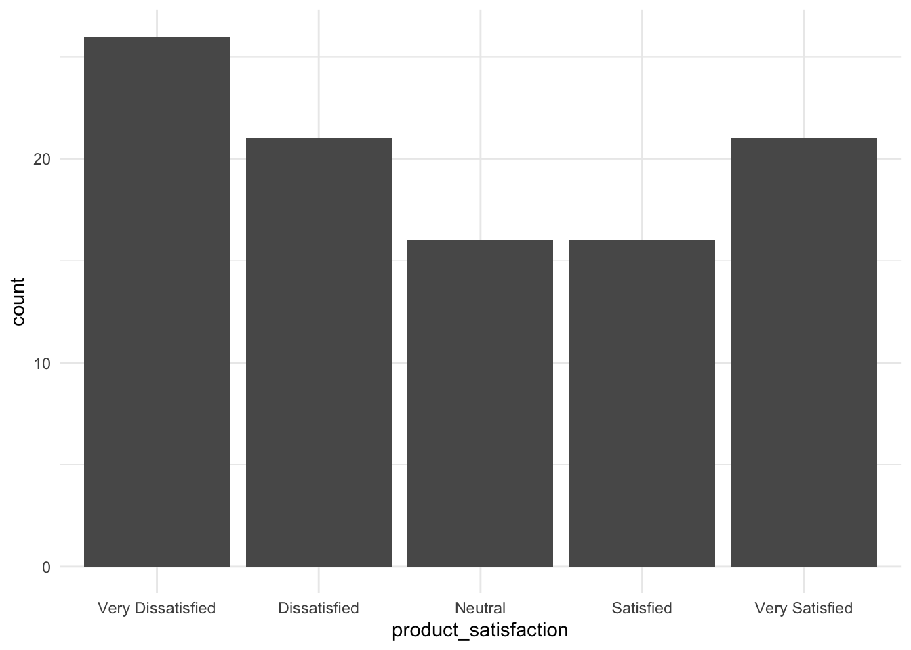

The purpose of this homework is to give you several opportunities to practice functions and tools you learned in Lecture 9. Once completed, submit both your quarto document (.qmd) and the rendered HTML file.
Failure to submit a properly rendered HTML file will result in a grade of 0 for this homework.
Note: You may need to copy and paste the links above into your web browser.
10.3 Preliminaries
Load the following script to load the tidyverse package
library(tidyverse)
── Attaching core tidyverse packages ──────────────────────── tidyverse 2.0.0 ──
✔ dplyr 1.1.4 ✔ readr 2.1.5
✔ forcats 1.0.0 ✔ stringr 1.5.1
✔ ggplot2 3.5.1 ✔ tibble 3.2.1
✔ lubridate 1.9.3 ✔ tidyr 1.3.1
✔ purrr 1.0.2
── Conflicts ────────────────────────────────────────── tidyverse_conflicts() ──
✖ dplyr::filter() masks stats::filter()
✖ dplyr::lag() masks stats::lag()
ℹ Use the conflicted package (<http://conflicted.r-lib.org/>) to force all conflicts to become errors
10.4 Loading survey_data (0 pt)
For this homework, make sure to load customer_satisfaction_survey_data.csv into your R environment. Name this R object or table as survey_data into your R env’t
# Place your code chunk below:survey_data <-read_csv("data/customer_satisfaction_survey_data.csv")
Rows: 100 Columns: 9
── Column specification ────────────────────────────────────────────────────────
Delimiter: ","
chr (7): gender, purchase_frequency, product_satisfaction, service_satisfact...
dbl (2): respondent_id, age
ℹ Use `spec()` to retrieve the full column specification for this data.
ℹ Specify the column types or set `show_col_types = FALSE` to quiet this message.
10.5 survey_data Descriptors
The data you loaded is a survey data collected to assess customer satisfaction. The data set includes the following nine variables:
respondent_id: A unique ID for each respondent.
age
gender: Respondents can select their gender from predefined categories.
purchase_frequency: Frequency of purchases.
product_satisfaction, service_satisfaction, delivery_satisfaction: Three seperate columns with likert scale questions with responses ranging from “Very Dissatisfied” to “Very Satisfied” to indicate their satisfactions with the product, service, and delivery.
recommend_to_others: Likelihood of recommending to others using a scale from “Definitely Not” to “Definitely Yes.”
comments: Contains unique text comments if the respondent left feedback, with some values being NA for rows where customer didn’t leave optional comments.
10.6 Task 1 (1 pt)
You may use the R chunk below to assist you in answering the question for Task 2:
# Place your code below# median/max/min age:survey_data |>summarise(median_age =median(age, na.rm=TRUE),max_age =max(age, na.rm=TRUE),min_age =min(age, na.rm=TRUE))
# for min/max, you could have also used #survey_data |># slice(which.max(age))##survey_data |># slice(which.min(age))
Question: What is the median age of the survey respondents? What is the lowest and highest age reported in the data set? Use the R chunk below (Hint: use min() and max() inside summarize())
Your answers to the questions above: Median is 37, min age is 18, max age is 65.
10.7 Task 2 (1 pt)
product_satisfaction fromsurvey_data is a variable with five unique values from “Very Dissatisfied” to “Very Satisfied”. Using the R chunk below, determine the five unique values of product_satisfaction. Using that information, create a vector of levels with the proper ordering for the unique values of product_satisfaction (think about what is the correct ordering) then convert product_satisfaction into factor type with the correct ordering for product_satisfaction. Save the resulting data frame into your R environment as survey_data_v2.
# Place your code below# unique values of product_satisfactionsurvey_data |>distinct(product_satisfaction)
# A tibble: 5 × 1
product_satisfaction
<chr>
1 Very Dissatisfied
2 Dissatisfied
3 Neutral
4 Very Satisfied
5 Satisfied
# from worst to bestlevel_vector <-c("Very Dissatisfied", "Dissatisfied", "Neutral", "Satisfied" ,"Very Satisfied")survey_data_v2 <- survey_data |>mutate(product_satisfaction =factor(product_satisfaction, levels = level_vector))# extra just to confirm fct typesurvey_data_v2 |>distinct(product_satisfaction)
# A tibble: 5 × 1
product_satisfaction
<fct>
1 Very Dissatisfied
2 Dissatisfied
3 Neutral
4 Very Satisfied
5 Satisfied
10.8 Task 3 (1 pt)
Using survey_data_v2’s product_satisfaction and the R chunk provided below, create a bar chart that shows the counts for product_satisfaction (hint: geom_bar)
# Place your code belowggplot(survey_data_v2, aes(product_satisfaction)) +geom_bar() +theme_minimal() # last one is extra you don't need--to make it pretty

10.9 Task 4 (1 pt)
Follow what you did in Task 2 but use survey_data_v2 instead of survey_data as your starting data. This time, however, convert service_satisfaction and delivery_satisfaction into factor type with the proper ordering at the same time. Hint: there will be two factor statements inside mutate(). Save the resulting table (data frame) into your R environment as survey_data_v3.
# Place your code below# unique values of service_satisfaction survey_data |>distinct(service_satisfaction)
# A tibble: 5 × 1
service_satisfaction
<chr>
1 Neutral
2 Very Dissatisfied
3 Dissatisfied
4 Satisfied
5 Very Satisfied
# unique values of delivery_satisfactionsurvey_data |>distinct(delivery_satisfaction)
# A tibble: 5 × 1
delivery_satisfaction
<chr>
1 Dissatisfied
2 Very Dissatisfied
3 Satisfied
4 Very Satisfied
5 Neutral
# A tibble: 6 × 9
respondent_id age gender purchase_frequency product_satisfaction
<dbl> <dbl> <chr> <chr> <fct>
1 1 39 Female Rarely Very Dissatisfied
2 2 24 Female Frequently Dissatisfied
3 3 61 Male Always Neutral
4 4 41 Prefer not to say Occasionally Dissatisfied
5 5 21 Female Rarely Very Satisfied
6 6 33 Male Always Very Satisfied
# ℹ 4 more variables: service_satisfaction <fct>, delivery_satisfaction <fct>,
# recommend_to_others <chr>, comments <chr>
10.10 Task 5 (2 pt)
Using survey_data_v3 and the R chunk provided below, follow what you did in Task 3. This time, you will create two separate plots for service_satisfaction and delivery_satisfaction that reflects the proper ordering.
# Place your code belowggplot(survey_data_v3, aes(service_satisfaction)) +geom_bar() +theme_minimal()
Use fct_recode() with survey_data’s service_satisfaction to recode the following:
“Very Dissatisfied” → “Dissatisfied or Very Dissatisfied”
“Dissatisfied” → “Dissatisfied or Very Dissatisfied”
“Neutral” → “Neither Satisfied nor Dissatisfied”
“Satisfied” → “Satisfied or Very Satisfied”
“Very Satisfied” → “Satisfied or Very Satisfied”
Save the resulting data into your R env’t as survey_data_recoded. Print a sample of survey_data_recoded via head() below:
# Place your code belowsurvey_data_recoded <- survey_data |>mutate(service_satisfaction =factor(service_satisfaction)) |>mutate(service_satisfaction =fct_recode(service_satisfaction, "Dissatisfied or Very Dissatisfied"="Very Dissatisfied", "Dissatisfied or Very Dissatisfied"="Dissatisfied", "Neither Satisfied nor Dissatisfied"="Neutral", "Satisfied or Very Satisfied"="Satisfied","Satisfied or Very Satisfied"="Very Satisfied"))head(survey_data_recoded)
# A tibble: 6 × 9
respondent_id age gender purchase_frequency product_satisfaction
<dbl> <dbl> <chr> <chr> <chr>
1 1 39 Female Rarely Very Dissatisfied
2 2 24 Female Frequently Dissatisfied
3 3 61 Male Always Neutral
4 4 41 Prefer not to say Occasionally Dissatisfied
5 5 21 Female Rarely Very Satisfied
6 6 33 Male Always Very Satisfied
# ℹ 4 more variables: service_satisfaction <fct>, delivery_satisfaction <chr>,
# recommend_to_others <chr>, comments <chr>
10.12 Task 7 (1 pt)
Use fct_recode() with survey_data’s product_satisfaction to recode the following:
“Very Dissatisfied” → “Strongly Dissatisfied”
“Very Satisfied” → “Strongly Satisfied”
Save the resulting data into your R env’t as survey_data_recoded_v2. Print a sample of survey_data_recoded_v2 via head() below:
# Place your code belowsurvey_data_recoded_2 <- survey_data |>mutate(product_satisfaction =factor(product_satisfaction)) |>mutate(product_satisfaction =fct_recode(product_satisfaction,"Strongly Dissatisfied"="Very Dissatisfied","Strongly Satisfied"="Very Satisfied"))head(survey_data_recoded_2)
# A tibble: 6 × 9
respondent_id age gender purchase_frequency product_satisfaction
<dbl> <dbl> <chr> <chr> <fct>
1 1 39 Female Rarely Strongly Dissatisfied
2 2 24 Female Frequently Dissatisfied
3 3 61 Male Always Neutral
4 4 41 Prefer not to say Occasionally Dissatisfied
5 5 21 Female Rarely Strongly Satisfied
6 6 33 Male Always Strongly Satisfied
# ℹ 4 more variables: service_satisfaction <chr>, delivery_satisfaction <chr>,
# recommend_to_others <chr>, comments <chr>
10.13 Task 8 (1 pt)
purchase_frequency fromsurvey_data_v3 is a variable with four unique values. Using the R chunk below, determine the four unique values of purchase_frequency from survey_data_v3. Using that information, create a vector of levels with the proper ordering for the unique values of purchase_frequency then convert purchase_frequency into factor type with the correct ordering for purchase_frequency. Save the resulting data frame into your R environment (name it however you want). Make sure to print this table (data frame) below:
# Place your code below# unique values of purchase_frequencysurvey_data_v3 |>distinct(purchase_frequency)
# A tibble: 6 × 9
respondent_id age gender purchase_frequency product_satisfaction
<dbl> <dbl> <chr> <fct> <fct>
1 1 39 Female Rarely Very Dissatisfied
2 2 24 Female Frequently Dissatisfied
3 3 61 Male Always Neutral
4 4 41 Prefer not to say Occasionally Dissatisfied
5 5 21 Female Rarely Very Satisfied
6 6 33 Male Always Very Satisfied
# ℹ 4 more variables: service_satisfaction <fct>, delivery_satisfaction <fct>,
# recommend_to_others <chr>, comments <chr>
10.14 Task 9 (1 pt)
The code below generates the sports_data table (data frame) that contains records for 15 students and their favorite sports. Run the code below and pay attention to the table generated:
Using the R chunk below, use fct_lump_min() to lump all sports that occur less than 3 times into the “Other” category. Save the resulting table as sports_data_v2 in the R environment. And print this new data using head().
# Place your code belowsports_data_v2 <- sports_data |>mutate(favorite_sport =fct_lump_min(favorite_sport, 3))head(sports_data_v2)
# A tibble: 6 × 2
student_id favorite_sport
<int> <fct>
1 1 Soccer
2 2 Basketball
3 3 Soccer
4 4 Other
5 5 Basketball
6 6 Other